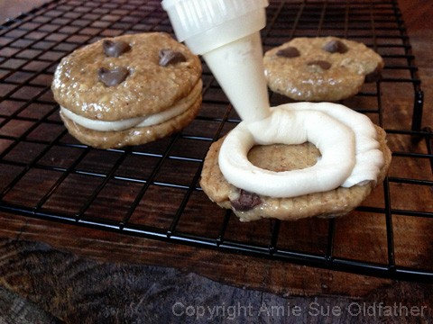
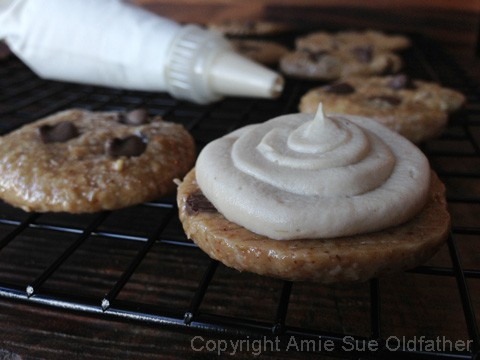
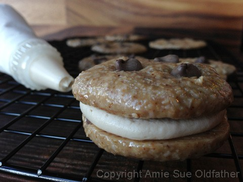
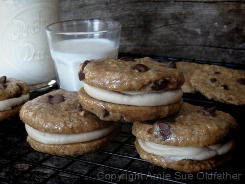
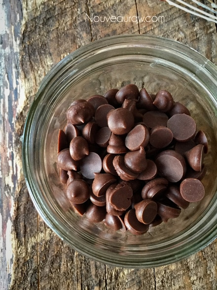

Chocolate Chip and Espresso Buttercream Sandwich Cookie
 This recipe is a mashup of my raw Chocolate Chip Cookie and the Espresso Buttercream Frosting.
This recipe is a mashup of my raw Chocolate Chip Cookie and the Espresso Buttercream Frosting.
These cookies are not low in fat, and like everything else, they should be eaten in moderation. Truth be told because they are so rich in healthy fats and are packed full of other nutrients, you may find that you are quite satisfied after one, or maybe two. :)
If you are not a fan of the taste of “coffee” that is in the Espresso Buttercream Frosting, you could easily pick from many other frostings that I have on my site. Or use your own family favorite recipe. I hope that you aren’t related to Betty Crocker. Hehe Not that there would be anything wrong with that. But have you seen what they use to make their tub frostings? Oy-vey.
Anyway, here a few others that would taste amazing with this cookie:
Milk Chocolate Cake Frosting
Cinnamon Date Frosting
Chocolate Ganache
Caramel Frosting
Mashup:

- Divide the cookies into two equal piles.
- Fill the piping bag, fitted with a round tip, half full. If the bag is too full, it can be difficult to handle.
- If the frosting is too firm to easily come through the piping tip, allow it to warm up just a little bit first. And if the frosting gets too soft while piping, place it back in the fridge just long enough to firm up a bit.
- Flip the cookie over; you will be placing the frosting on the bottom side of the cookie. Starting on the outside edge of the cookie, start piping the frosting in a circular motion working the frosting towards the center of the cookie.
- Place another cookie on top and very gently press down. Continue the process until all the cookie sandwiches are made. Again, if the frosting gets too warm, place in the fridge. It is best to store the sandwich cookies in the fridge for 5-7 days or in the freezer for 1 month. Be sure that they are in an airtight container, so the cookies don’t pick up fridge/freezer odors.
No wonder that I am always in a constant state of hunger. Lol Not only do I work
with all this food, I now have to stare at the pictures. :)





Make your own raw chocolate chips!

© AmieSue.com